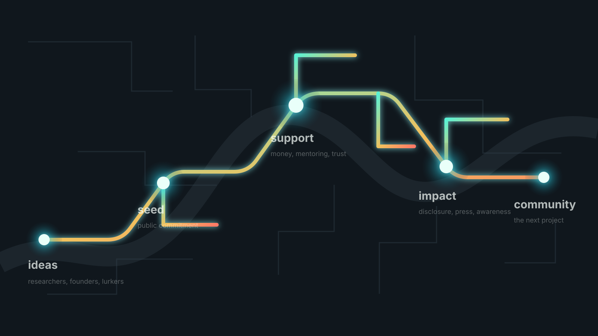

Hacker Foundation Hijinks
For more: pdxhf.org
“I saw people with cool ideas and no money—and people with money and no time.” The electrical arc
A foundation is not just for people who already know nonprofit law.
ResearcherBring a sharp question.
DonorTurn idle capital into motion.
MentorShare taste, contacts, and nerve.
OrganizerMake the room.
LurkerLearn until the right moment.
FounderCreate the container.
Announce it publicly. Commit real money. Invite the community in.
SignalSay the thing out loud.
StakePut enough money in to move.
Surface areaLet helpers find a handle.
Board, bylaws, lawyers, and the 501(c)(3).
- Paperwork forces legibility.
- The board forces accountability.
- The mission forces prioritization.
- Status makes trust easier.
$1,000
Rey, then a high-school student, wanted a Halo vape detector from eBay.
A compelling target became consequential research.

target + trust + technical help$1,000 can become a public-interest story if it lands on the right project.
$1,000->research->disclosure->DEF CON->Wired->public awareness
Money starts the arc. Community keeps it conducting.
Microgrants
HACKLUNCH
Signal
Mentoring
Donors
Shared expertise
The public site frames this as grants, education, and community infrastructure.
501(c)(3)A nonprofit supporting the Portland hacker community.
~$1,000Microgrants for asymmetric impact.
MonthlyHACKLUNCH on second Wednesdays at noon.
CTRL-HCommunity centered around PDX Hackerspace.
Public reference checked at pdxhf.org.
Start with people, a clear mission, modest capital, and one interesting project.
people
mission
modest capital
one project
then governance
A functioning circuit needs more than founders.
Submit an idea
Donate
Mentor
Join the discussion
Lurk and learn
Start a foundation
“There is probably already a great idea in your community waiting for someone to close the circuit.” pdxhf.org